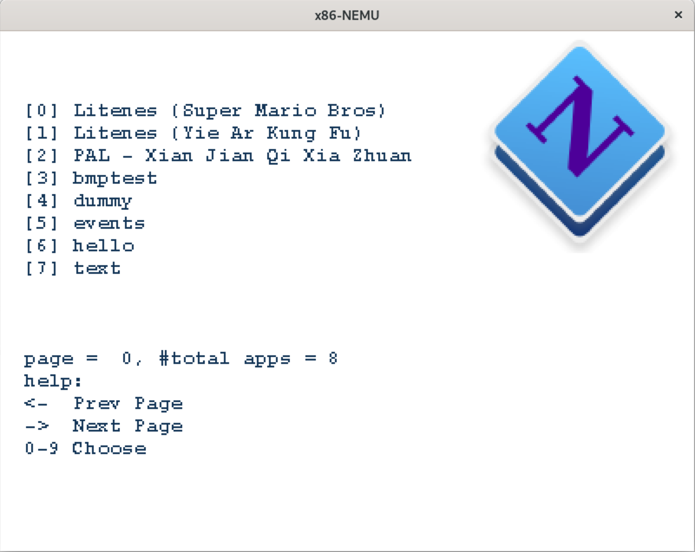

Dear Professor: Hi! Thanks for reviewing my application! This personal website may provide more information for your reference:
- [Research Project] section includes detailed descriptions and downloadable writing samples about my reasearch work;
- [Miscellaneous] section presents my extracurricular activities in diverse aspects.
Enjoy your visit on my homepage! :)
Biography
I was admitted to study in Kuang Yaming Honors School, Nanjing University in September 2018. After studying General Natural Sciences for one freshman semester, I declared Computer Science as my major. Through the training of my course in the previous two years, I have aquired the basic knowledge about computer science field and the ability to solve the problems independently. Also, Kuang Yaming Honor School, a department which dedicates on multidisciplinary research, cultivates my interests in numerous scientific fields and multidisciplinary reasearch. So, despite of computer science studies, I am also very glad to have any chance to study in multidisciplinary reasearch and fully exploit my professional skills.
[go top]
Education Experience
1. Elite Program of Computer Science, Nanjing University. Sept, 2018 - present
2. Machine Learning Plus Deep Learning Summer Online Program, MIT. Jul, 2020 - Aug, 2020
3. Advanced Business and British Culture Summer Program, Oxford University. Jul, 2019 - Aug, 2019
Reasearch Experience
1. Network traffic measurement based on sketch algorithm (proceeding)
Network traffic measurement is a technology for sampling, statistics and analysis of network data packets on routers and other forwarding devices. Through the data information provided by network measurement, network managers can optimize routing decisions, assist congestion control, and perform critical computer networks such as abnormal detection task. This project aims to optimize the accuracy of the measurement algorithm, reduce the cost of the measurement algorithm and developing an intelligent and efficient network measurement platform.
2. Multimedia Computing Group (studying)
Environment perception research requires the integration of various techniques, including multimedia content classification and processing, machine learning, modeling and visualization, intelligent interaction and big data processing. Multimedia computing group (MCG) aims to study environment perception technology and use it in real applications. I am currently studying in this group as an undergraduate. My current work in this group involves: Labeling video frames, ...
[go top]
Student Project
- 2019 MCM
[download report]
In the first semester of freshman year, I participated in the mathematical modeling competition and completed the first English thesis writing task of my group cooperation.
-
2019 digital logic circuit design course experiments: some small experiments completed on the FPGA.
- CPU design
[download report]
- electical "piano" design
- keyboard design
- etc.
- 2019-2020 computer system experiments：
- Completed NEMU virtual machine (much like the basic version of QEMU) and we can run some games on it.

- Implemented some of the kernel code in the operating system, including memory allocating, multi-thread APIs and some of the syscall APIs.
- 2020 MIT machine learning course project: [COVID-19 Detection from X-Ray Images]
Use basic CNN to train on a small set of X-Ray Images and test whether a patient has COVID-19 (final acurray 71%).
[go top]
Awards & Honors
- Second Prize of Elite Program Scholarship Award. 2020
- Second Prize of People's Scholarship Award. 2020
- Yang Yongman Scholarship. 2020
- Second Prize of Elite Program Scholarship Award. 2019
- Third Prize of People's Scholarship Award. 2019
- Bronze Prize of 16th Nanjing University CS department Programming Contest. 2019
- Students' Union Involvement Award. 2019
- Successful participant of MCM. 2019
[go top]
Miscellaneous
1. Vice President of Students' Union, Kuang Yaming Honors School
I was Vice President of the Students’ Union in Kuang Yaming Honors School, Nanjing University, from July 2019 to September 2020, mainly in charge of student designing activities on campus. I led a group of 22 students in Kuang Yaming Honors School Media Center. My major contribution includes helping origanizing the 19th Forum of Sciences & Arts of Nanjing University, the largest student paper contest on campus. We also held six public lectures/seminars, the topics of which include mathematical modeling, research paper writing, international exchange experience, etc.